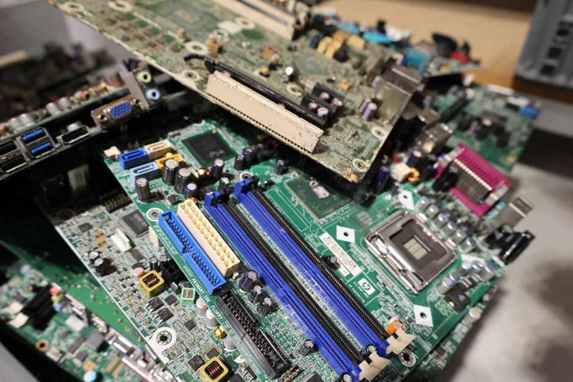

Parameter-Efficient Fine-Tuning: What Actually Gets Updated
Adapters and LoRA let you fine-tune huge models by touching a tiny fraction of their weights. Here is what that actually means in practice.

Why full fine-tuning is overkill
Fine-tuning a large pretrained model traditionally means updating every single weight. For a model with a few hundred million parameters that is already expensive to store and optimise; for models with tens of billions it becomes impractical for most people outside a well-resourced lab. You need a full copy of the gradients, a full copy of the optimiser state, and enough memory to hold activations for backpropagation through every layer. If you want ten different task-specific versions of the same base model, you end up storing ten full copies of it.
Parameter-efficient fine-tuning, PEFT, starts from a simple observation: adapting a pretrained model to a new task usually does not require changing everything it knows. Most of the representational machinery built during pretraining is still useful. What you typically need is a small, targeted correction, a nudge that redirects existing capabilities towards the new task rather than rebuilding them from scratch. If that is true, you should be able to freeze almost all of the original weights and learn only a small number of new parameters that steer the model.
This is not just a memory-saving trick, though that matters enormously. It also tends to act as a form of regularisation. Freezing most of the network limits how far the model can drift from its pretrained behaviour, which reduces the risk of catastrophic forgetting and often reduces overfitting on small task-specific datasets. When your labelled data is limited, that constraint can be the difference between a model that generalises and one that memorises.
Adapters: small bottleneck layers inserted into the network
The adapter approach inserts small trainable modules between the existing layers of a pretrained network, while keeping the original weights frozen. A typical adapter is a bottleneck: it projects the layer's output down to a much smaller dimension, applies a non-linearity, then projects back up to the original size, with a residual connection so the adapter starts close to an identity function at initialisation. During fine-tuning, only these adapter parameters and perhaps the final task head are updated.
Consider a transformer layer with a hidden size of 1024. A standard feed-forward block inside it might have several million parameters. An adapter inserted after that block, with a bottleneck dimension of 64, needs only two small matrices: one of size 1024 by 64, and one of size 64 by 1024, roughly 131,000 parameters, plus a small bias term. Stack that across twelve or twenty-four layers and the total number of trainable parameters might come to one or two per cent of the full model, sometimes less.
The practical benefit is compounding: you store one frozen base model and a lightweight adapter file per task, often just a few megabytes, and you can swap adapters in and out without reloading the entire network. The cost is a small amount of added inference latency, because the adapters are extra layers that every forward pass must pass through, and there is some sensitivity to where in the network you place them and how large you make the bottleneck.
LoRA: reparameterising the weight update itself
Low-Rank Adaptation takes a different route. Rather than inserting new layers, it changes how an existing weight matrix is updated. For a frozen weight matrix W, LoRA represents the fine-tuning update as the product of two much smaller matrices, A and B, so the effective weight during the forward pass becomes W plus B times A, scaled by a small factor. W itself never changes; only A and B are trained, and at inference you can either keep them separate or merge them into W with a single addition, which means no extra latency at all once merged.
The intuition rests on a specific claim: the update needed to adapt a large weight matrix to a new task tends to have low intrinsic rank. That means even though W might be 1024 by 1024, containing around a million parameters, the useful correction to it can often be captured by a much lower-dimensional interaction. If you choose a rank of 8, matrix A is 1024 by 8 and matrix B is 8 by 1024, giving roughly 16,000 trainable parameters to represent an update to a matrix that would otherwise need a million. Applied to the query and value projection matrices across every attention layer in a moderately sized transformer, LoRA can bring trainable parameters down to a fraction of one per cent of the total, while still recovering most of the performance of full fine-tuning on many tasks.
This is the detail that trips people up: LoRA does not add new computation paths the way adapters do, it reparameterises the gradient update on existing paths. That is why merged LoRA weights add zero inference overhead, and why LoRA composes cleanly with quantised base models, since you can keep the frozen backbone in low precision and train the small A and B matrices in higher precision on top.
What this means for your own experiments
The rank or bottleneck size is your main lever, and it behaves like any other capacity control: too small and the model cannot express the correction the task needs, too large and you lose the efficiency and regularisation benefits, sometimes overfitting on small datasets in ways full fine-tuning also would. Sensible practice is to try a small handful of settings, for example rank 4, 8, and 16 for LoRA, and compare on a held-out validation set rather than assuming a single value from a paper transfers to your data.
Where you apply the method matters as much as how much capacity you give it. Adapting only the attention projections is often sufficient and cheaper; adding adapters or LoRA matrices to the feed-forward blocks as well can help on tasks that need more substantial shifts in representation, at the cost of more trainable parameters. This is an empirical question for your specific dataset, not something to assume from general guidance.
The honest caveat is that parameter-efficient methods are not free wins on every task. When the new task is very distant from the pretraining distribution, or when you have abundant labelled data and compute, full fine-tuning can still edge ahead. Report what fraction of parameters you trained, which layers you touched, and how you tuned rank or bottleneck size, since that is what makes a PEFT result reproducible rather than a single lucky configuration.
